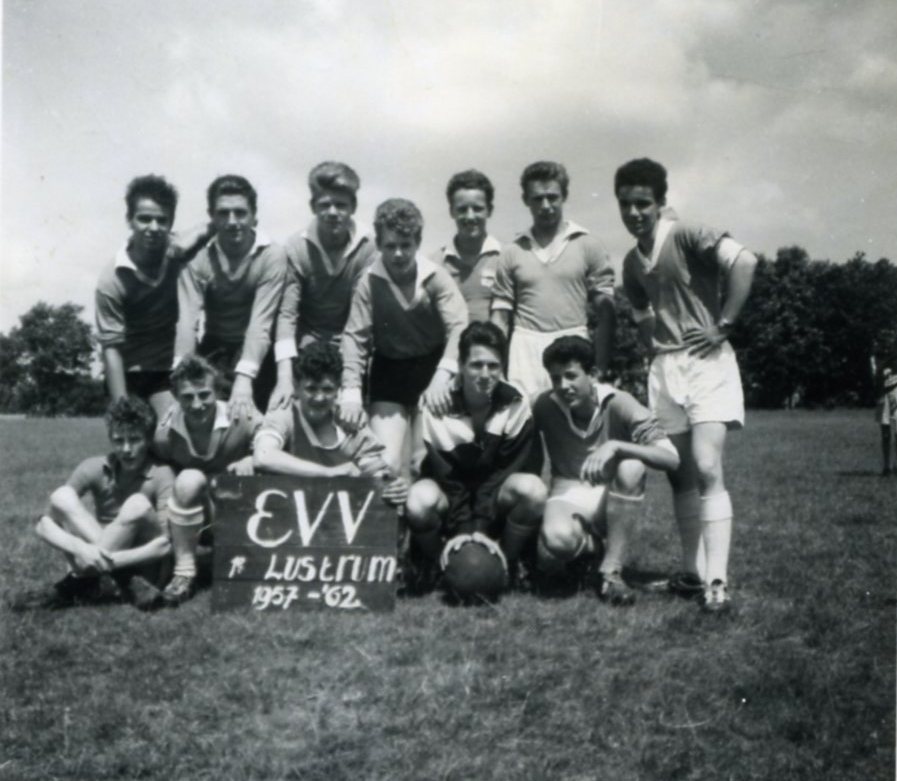

Als je namen weet die niet bij de foto's staan dan mail ons!
ctijs@gmail.com
© 2025 EVV'58 | All rights reserved by EVV'58.
Op deze website kunt u onderwerpen ontdekken die over de voetbalclub EVV'58 gingen. Alstublieft ontdek meer over deze geweldige club en kies een onderwerp.
Deze foto's zijn nergens te vinden maar moeten toch gewaardeerd worden dus daarom hebben wij ze opgeslagen in deze website.
Wij hebben ervaringen bij elkaar verzameld van mensen die met EVV'58 in aanraking zijn gekomen of het gekend hebben.
Deze fantastische voetbalclub heeft ook liedjes en wij willen natuurlijk deze liedjes niet verliezen dus daarom staan ze op deze website.
Kees Tijs was de oprichter van EVV'58 en streefde naar succes. Hij was op dat moment maar een tiener en zelfs dan heeft hij het voor elkaar gekregen om een prachtige club op te zetten. Door Kees Tijs zijn er veel mooie gebeurtenissen plaatsgevonden en heeft iedereen een leuke tijd gehad bij deze prachtige club. Hij zorgde altijd voor een gezellige tijd en probeerde altijd het beste voor de club te regelen zodat iedereen met plezier kon gaan voetballen. Helaas is deze club er niet meer maar natuurlijk moet Kees Tijs altijd in gedachte worden gehouden voor zijn werk en strijdlustigheid.

De prachtige club EVV'58 was opgericht om iedereen te kunnen laten voetballen. Het was een voetbalclub met een rijke geschiedenis van interessante belevingen maar ook hectische gebeurtenissen. Deze club bestaat niet meer maar het blijft altijd bestaan in ons hart.
© 2025 EVV'58 | All rights reserved by EVV'58.